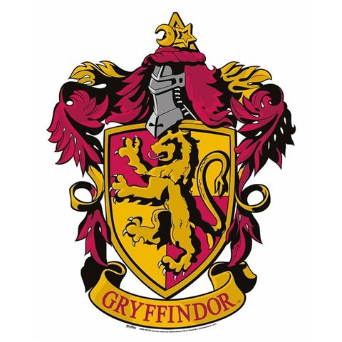
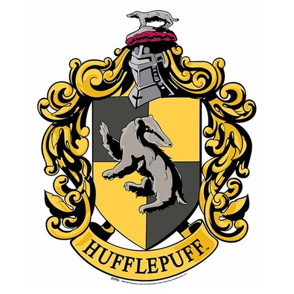
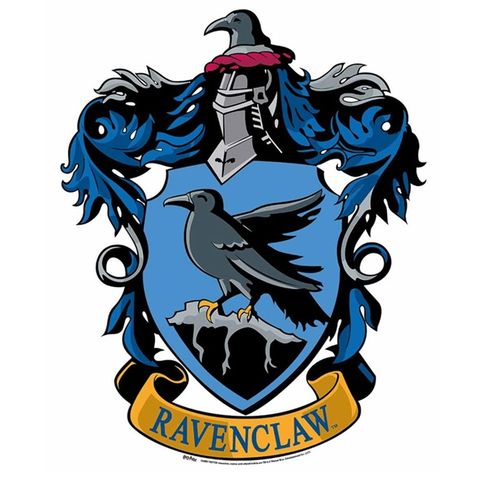
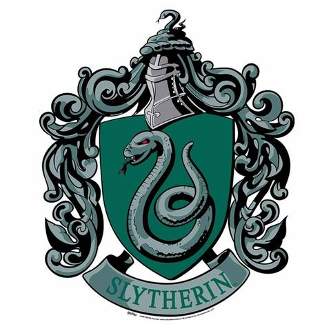

Gryffindor

La Casa Gryffindor fue fundada por el célebre mago Godric Gryffindor. Godric solo aceptaba en su casa a aquellos magos y brujas que tenían valentía, disposición y coraje, ya que estas son las cualidades de un auténtico Gryffindor. Los colores de esta casa son el dorado y el escarlata y su símbolo es un león. La reliquia más preciada de la casa es la espada de Godric Gryffindor, perteneciente, como su nombre indica, al fundador de la casa. Los estudiantes de esta casa pasan la mayor parte del tiempo en la Torre de Gryffindor, ubicada en el séptimo piso del Castillo de Hogwarts.
Hufflepuff

La Casa Hufflepuff se encuentra en una bodega en el mismo pasillo subterráneo que en el de la cocina. Hufflepuff anteriormente buscaba alumnos que quisieran pertenecer a esa casa de puro consentimiento, aunque actualmente busca alumnos leales, honestos, que no temen al trabajo pesado. La fundadora es nada menos que la bruja, amiga de toda la vida de Rowena Ravenclaw, Helga Hufflepuff. Helga, fue una bruja muy noble, amigable y la principal impulsora de que Hogwarts aceptase a alumnos nacidos de muggles. La principal reliquia de la casa es la copa de Helga Hufflepuff. El símbolo de la casa es un tejón negro y sus colores representativos son el amarillo y el negro carbón.
Ravenclaw

La Casa Ravenclaw se encuentra en una torre en el ala oeste del castillo. En la entrada se encuentra un llamador con forma de águila que dice acertijos y solo te deja entrar si lo resuelves. Sus colores son el azul y el bronce. Ravenclaw busca alumnos académicos, estudiosos y que siempre sepan lo que hay que hacer. Fue fundada por la bruja, nacida en la Canada, Rowena Ravenclaw. Supuestamente la principal inventora del nombre, lugar y formato de Hogwarts. Ella misma es la causante de que las escaleras se muevan. Su principal reliquia es la diadema de Rowena Ravenclaw. El símbolo de la casa es el águila, aunque en alguna versión del escudo es un cuervo.
Slytherin

La Casa Slytherin, caracterizada principalmente por la ambición y la astucia. Fue fundada por el mago Salazar Slytherin. La Sala Común de esta casa está situada en las mazmorras, pasando por un serie de numerosos pasillos subterráneos. Posiblemente se llega a ellos a través del Vestíbulo de Hogwarts . Específicamente se encuentra debajo del Lago Negro, haciendo que la sala común sea fría y con una tonalidad verdosa, ya que hay ventanas que dan a las aguas. Se accede a ella por una puerta altamente disimulada en un muro de piedra, diciendo una contraseña requerida. La única conocida es "Sangre Pura". Su principal reliquia es el guardapelo de Salazar Slytherin. El animal representativo es la serpiente, sus colores son verde y plateado y el elemento es el agua asociada con la astucia y frialdad.